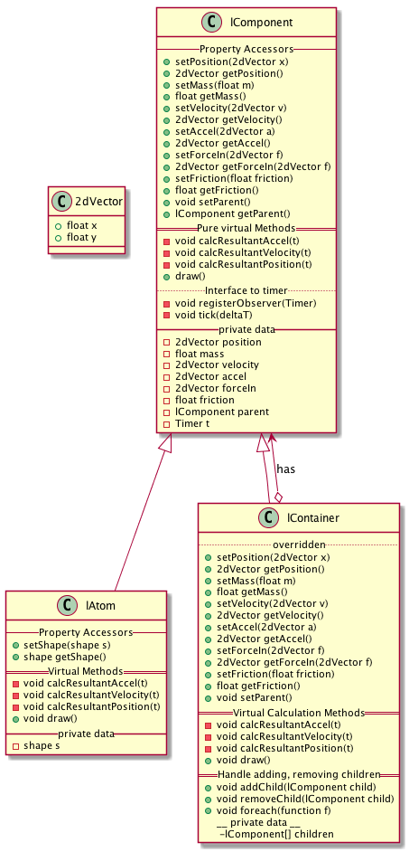
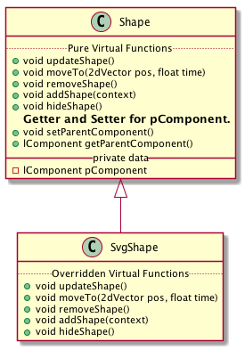

layouts
Table of Contents
1 Create a force layout for javascript
Elements have forces applied to them and move until the forces on them are in balance, or sum to 0. There should also probably be some friction applied for each element.
1.1 Time and motion
Elements receive a tick message to indicate that time has passed and a new calculation must be done based on:
- current position
- forceIn
- current velocity
- current acceleration
- mass
- charge?
- friction
1.1.1 Equations of motion
Displacement: \[r = r(t)\] Velocity: \[v = \frac{dr}{dt}\] Acceleration: \[a = \frac{dv}{dt} = \frac{d^{2}r}{dt^{2}}\]
1.1.2 Acceleration
The resultant acceleration of a particle/element in response to some force is found by adding the current acceleration to the acceleration that results from applying the force to an object with the given mass.
So, for example, if the particle has these properties:
- a0 = initial acceleration = ((x . xa) (y . ya))
- mass = M
and a force:
- F = ((x . xF) (y . yF))
(where xa and xF are the x component of the current acceleration and applied force respectively, and ya and yF are similar values in the y direction), then the resultant acceleration will be:
\[Resultant \ Acceleration = \frac{1}{M} \times F + a0 \]
(defun addVectors (a b)
"Add vectors a and b together."
(let (
(xVal (+ (cdr (assoc 'x a)) (cdr (assoc 'x b))))
(yVal (+ (cdr (assoc 'y a)) (cdr (assoc 'y b))))
)
;; Note use of back tick and comma to force evaluation of xVal and yVal
;; in the assoc list.
`((x . ,xVal)
(y . ,yVal))))
(defun accel (force mass currentAccel)
"Calculate the acceleration of a body with mass == mass, and a current
acceleration of currentAccel after force has been applied to it."
(let (
(na `((x . ,(/ (cdr (assoc 'x force)) (float mass)))
(y . ,(/ (cdr (assoc 'y force)) (float mass)))))
)
(addVectors na currentAccel)
))
;; Set the value of the applied force.
(setq f0 '((x . 5) (y . -5)))
;; Set the value of the initial acceleration.
(setq ca '((x . 3) (y . 10)))
;; Set the body's mass.
(setq m 10)
;; Set newAccel to be the resultant acceleration of the body with initial
;; acceleration == ca, mass == m, and force applied == f0.
(setq newAccel (accel f0 m ca))
;; Print out some results.
(setq mess
(format "<p>f0.x == %f N, f0.y == %f N\n</p>"
(cdr (assoc 'x f0)) (cdr (assoc 'y f0))))
(setq mess
(concat
mess
(format "<p>current acceleration x == %f m/s2, y == %f m/s2\n</p>"
(cdr (assoc 'x ca)) (cdr (assoc 'y ca)))))
(setq mess
(concat
mess
(format "<p>Mass = %f kg\n</p>" m)))
(message
(format "%s<p>Resultant acceleration: x = %f y = %f\n</p>"
mess (cdr (assoc 'x newAccel)) (cdr (assoc 'y newAccel))))
f0.x == 5.000000 N, f0.y == -5.000000 N
current acceleration x == 3.000000 m/s2, y == 10.000000 m/s2
Mass = 10.000000 kg
Resultant acceleration: x = 3.500000 y = 9.500000
1.1.3 Velocity
Velocity at some period Δ t after the present is given by:
\[ v(t + \Delta t) = v_{0} + \int_{t}^{t + \Delta t}a(t) dt \]
If we use the formula F = ma, then \(a = \frac{F}{m}\). Also, as we're sampling time periods, we can assume that F is constant over the period from t \(\rightarrow\) Δ t, and so we get:
\[ v(t + \Delta t) = v_{0} + \int_{t}^{t + \Delta t}\frac{F}{m} dt \]
\[ = v_{0} + \frac{F * \Delta t}{m} = v_{0} + a \times \Delta t \]
As discussed above, we're calculating the new acceleration of an element based on a force applied to the element and initial conditions of the element at a time t. The question is whether to calculate the new velocity instantly, in which case we're setting the new velocity for "now" as the velocity we'd achieve at Δ t, or to calculate the new velocity based on the current values of acceleration and current velocity at the end of the time period Δ t.
I'm choosing the second alternative. This means that before we begin our calculation of a new acceleration due to an applied force, we need to calculate the velocity.
So, assuming we've set a new acceleration at time t, then we can calculate the new velocity at time t + Δ t as follows:
(defun mulVector (vec scal)
"Multiply vector vec by scalar scal."
`((x . ,(* scal (cdr (assoc 'x vec))))
(y . ,(* scal (cdr (assoc 'y vec))))))
(defun velocity (v0 delta_t a)
"Calculate the velocity after delta_t of an object with initial velocity v0
experiencing an acceleration of a."
(addVectors v0 (mulVector a delta_t)))
;; Set an initial value for the velocity.
(setq v0 '((x . 5) (y . -5)))
;; Set a time delta.
(setq delta_t (/ (float 1) (float 10)))
;; Calculate the velocity of a body with initial velocity v0, experiencing an
;; acceleration of newAccel, after time delta_t.
(velocity v0 delta_t newAccel)
1.1.4 Displacement / position
Each element will have an initial position. This will be some place in a container, possibly arbitrary, or perhaps ordered within some other set of elements.
The position of an element at time = t + Δ t, will be the position of the element at time t, + the velocity at time t multiplied by Δ t. So:
\[p(t + \Delta t) = p(t) + v(t) \times \Delta t \]
1.2 Sums of forces
Suppose we have a system containing 10 particles. For each particle we need to answer the following questions:
- What is the force exerted on this particle by all the other particles?
- What is the force exterted on every other particle by this particle?
Answering the second question actually answers the first, as the force that particle a exerts on particle b is exactly the same as the force that particle b exerts on particle a.
Suppose that the force exerted by this particle on it's neighbouring particles is just the force of gravity. Then all we need to know is the distance between this particle and the next to know the force that is being exerted on the next particle by this one, and to also know the force exerted on this particle by the next particle.
1.2.1 Algorithm 1
So, a simple algorithm to find all the forces exerted on all the particles would be:
- Begin with all particles in a list called particles:
- Pop a particle from the particles list and call it current
- For each particle p in the particle list, work out the force between current and p.
- Add that force to total force in current
- Add the force to total force in p - in the opposite direction,
- if there are more particles goto 3
- place current into a list called processed, and goto 2.
At the end of this algorithm, each particle should have a calculated total force applied to them. At this point it is possible to use that resultant force to calculate the new acceleration, velocity and position.
1.2.2 Algorithm 2
If we're simulating gravity or electrostatic charge in our system, then the force applied between A and B will be based solely on the distance between the two particles, and the charge or mass of A and B.
NOT SURE!
1.3 Containers and atoms
Elements are either atoms, or containers for other elements.
Atoms:
- have a mass,
- have a shape,
- have a position,
- have a velocity,
- have an acceleration,
- have an applied force.
The mass of an atom is considered to all be situated at it's (x, y) position.
A container:
- has a mass that is the sum of all the masses of it's contained elements,
- has a position - maybe the centre of mass,
- has a velocity,
- has an acceleration,
- has an applied force
Containers also can apply forces to the elements they contain, so that contained elements are constrained to be inside the container. The forces within a container should be fields, emanating from the container's boundaries.
2 UML
2.1 Composite layout object UML
Use the composite design pattern with an abstract base class lComponent, with subclasses lAtom and lContainer.

2.2 Abstract shape class
lAtom objects contain a abstract Shape class. The details of the GraphicalObject implementation and operation are dependent on the graphics techniques being used.
Define an abstract Shape class, and a concrete svg subclass.

3 Alternative approach - think about later.
Model the layout problem as a minimization problem, where the task is to minimize the resultant force on each particle.
Use gradient descent to find a θ vector that when mulitplied by polynomial factors generated from the x and y position, produces an x and y coordinate that mimimises the resultant force on the particle.
For particles layed out over a single dimension, perhaps with their x component constant, you'd only need the linear factors y and possibly x in their feature set. For 2-dimensional layouts, you'd need higher order polynomial terms, and combinations of terms.